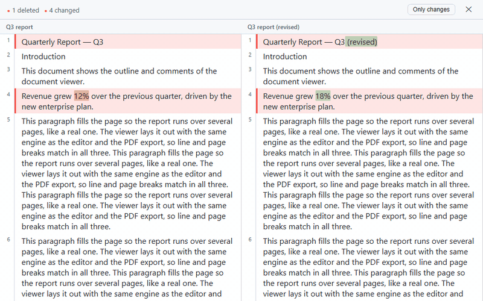

<universal-write-diff>
A web component for comparing .docx documents side by side, in the self-contained
@universal-office/compare package (no dependencies, no fonts needed). It aligns blocks with Myers/histogram,
refines changes word by word within a paragraph, and distinguishes content changes
from format-only changes.

Usage
<universal-write-diff id="wd" view="all" left-label="Original" right-label="Modified"></universal-write-diff>import '@universal-office/compare';
const wd = document.getElementById('wd');
// From the bytes of two .docx files:
wd.loadPair(aBytes, bBytes, { leftLabel: 'v1.docx', rightLabel: 'v2.docx' });
// Or from documents already parsed by the document core:
import { DocxPackage, readFullDocument } from '@universal-office/compare';
const aDoc = readFullDocument(DocxPackage.load(aBytes));
const bDoc = readFullDocument(DocxPackage.load(bBytes));
wd.loadDocuments(aDoc, bDoc, { leftLabel: 'v1', rightLabel: 'v2' });Attributes
| Attribute | Description |
|---|---|
view | 'all' (default): every block. 'diffs': unchanged runs collapse into clickable "… N unchanged blocks …" bands. The Only changes button toggles it. |
left-label | Label for the left pane (default: "Original"). |
right-label | Label for the right pane (default: "Modified"). |
lang | UI language: en or pt. Without it: Portuguese if the browser prefers it, otherwise English. |
Properties and methods
| Member | Description |
|---|---|
loadPair(aBytes, bBytes, opts?) | Parses two .docx byte arrays and computes the diff. opts: { leftLabel?, rightLabel? }. |
loadDocuments(aDoc, bDoc, opts?) | Compares two FullDocument objects from the document core (avoids re-parsing — ideal for comparing the editor's current state). |
view (get/set) | Reads or changes the display mode ('all' | 'diffs'). |
stats (get) | DocDiffStats | null for the loaded diff. |
Events
| Event | detail | Fires when |
|---|---|---|
ready | { stats: { inserted, deleted, changed, formatOnly, equal } } | Diff computed and rendered. |
close-request | — | The ✕ button was clicked. The component does not close itself — the host decides (e.g. hide it and return to the editor). |
block-click | { editIndex, side: 'a' | 'b', blockIndex } | Click on a content block — use it to navigate to the range in the editor. |
How the diff is displayed
- Single grid, unified scroll. Both sides live in a single 4-column CSS grid (A numbering · A content · B numbering · B content). Aligned blocks occupy the same grid row — vertical alignment is automatic, with no JavaScript scroll syncing.
- Selectable text. The diff is rendered in the DOM (not canvas), so you can copy ranges.
- Word-by-word refinement. Changed blocks (
change) get word-level insertion/deletion marks within the paragraph. If the two texts share no words at all, no intra marks are emitted — avoiding visual noise. - Nested table diffing. When both sides of a
changeare tables, rows are aligned individually — inserted, deleted, or changed rows are highlighted within the table. - Image equality by byte. Two images are equal if and only if their bytes are identical. Resizing an image (same bytes) counts as formatting, not content.
- Content vs. formatting. Blocks with identical text but different formatting become a
changewithformatOnly: trueandimportance: 'minor'— shown in blue (instead of red) and counted separately in the header (✎ N formatting), without breaking the alignment of the other blocks.
Recipe: "Compare with…" next to the editor
This is the flow used by the Write desktop app: serialize the editor's current state and compare it with a file chosen by the user.
async function compareWith(file) {
const other = new Uint8Array(await file.arrayBuffer());
const current = await editor.save('docx'); // current state of <universal-write>
wd.loadPair(current, other, {
leftLabel: 'Current document',
rightLabel: file.name,
});
editor.style.display = 'none';
wd.style.display = 'flex';
}
wd.addEventListener('close-request', () => {
wd.style.display = 'none';
editor.style.display = '';
});Programmatic API
Besides the web component, @universal-office/compare exports the diff engine
for direct use (reports, pipelines, CI):
import { diffDocuments, DocxPackage, readFullDocument } from '@universal-office/compare';
const a = readFullDocument(DocxPackage.load(aBytes));
const b = readFullDocument(DocxPackage.load(bBytes));
const { edits, stats } = diffDocuments(a, b, {
algorithm: 'histogram', // default; 'myers' also available
intraWord: true, // word-by-word refinement (default)
});
console.log(`+${stats.inserted} −${stats.deleted} ~${stats.changed} ✎${stats.formatOnly}`);Functions
| Function | Description |
|---|---|
diffDocuments(a, b, opts?) | Compares two FullDocument objects; returns DocDiff. |
diffBlocks(aBlocks, bBlocks, opts?) | Diffs arrays of already-extracted blocks. |
intraWordMarks(aText, bText, pairOffset) | Word-level change marks between two texts; [] if equal or with no common anchor word. |
Types
interface DocDiff {
edits: DocEdit[];
stats: DocDiffStats;
}
interface DocDiffStats {
inserted: number; // inserted blocks
deleted: number; // removed blocks
changed: number; // blocks with changed content
formatOnly: number; // blocks with format-only changes
equal: number; // unchanged blocks
}
interface DocEdit {
kind: 'equal' | 'insert' | 'delete' | 'change';
a: BlockRange; // 1-based range in doc A (end = start - 1 → empty)
b: BlockRange; // 1-based range in doc B
aBlocks: number[]; // 0-based indices in a.blocks
bBlocks: number[]; // 0-based indices in b.blocks
formatOnly?: boolean; // content equal, only formatting changed
importance?: 'important' | 'minor'; // 'minor' when formatOnly
intra?: DocIntraEdit[]; // word-level marks (important changes)
tableRows?: (TableRowEdit[] | null)[]; // nested diff of table rows
}
interface DocIntraEdit {
kind: 'insert' | 'delete';
side: 'a' | 'b';
pairOffset: number; // index of the aligned pair in aBlocks/bBlocks
startCh: number; // inclusive UTF-16 offset in the paragraph text
endCh: number; // exclusive UTF-16 offset
}
interface TableRowEdit {
kind: 'equal' | 'insert' | 'delete' | 'change';
aRows: number[]; // 0-based indices in table A's rows
bRows: number[]; // 0-based indices in table B's rows
formatOnly?: boolean;
}
interface DocDiffOptions {
algorithm?: 'histogram' | 'myers'; // default: 'histogram'
intraWord?: boolean; // default: true
}
Algorithms: the Myers/histogram engine is a verbatim port of
OpenCompare operating over opaque tokens. 'histogram' (default) is
faster on most documents; 'myers' produces the classic minimal diff.